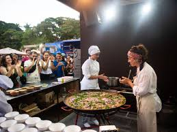
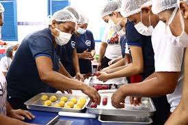

Degustação de Pratos Típicos
Descubra sabores autênticos de pratos típicos do mundo em uma experiência gastronômica única.

Descubra sabores autênticos de pratos típicos do mundo em uma experiência gastronômica única.

Participe de oficinas culinárias com chefs renomados e aprenda a preparar pratos deliciosos.

Descubra o processo mágico da fermentação e como ela transforma ingredientes simples em sabores complexos e únicos.
Na fermentação artesanal, microorganismos como bactérias e leveduras transformam açúcares em ácidos, gases e outros compostos que conferem sabores e texturas únicas aos alimentos.
Aprenda a combinar vinhos com pratos para criar experiências gastronômicas memoráveis.
A harmonização de vinhos envolve a seleção de vinhos que complementam os sabores dos pratos, criando uma experiência sensorial equilibrada e agradável.